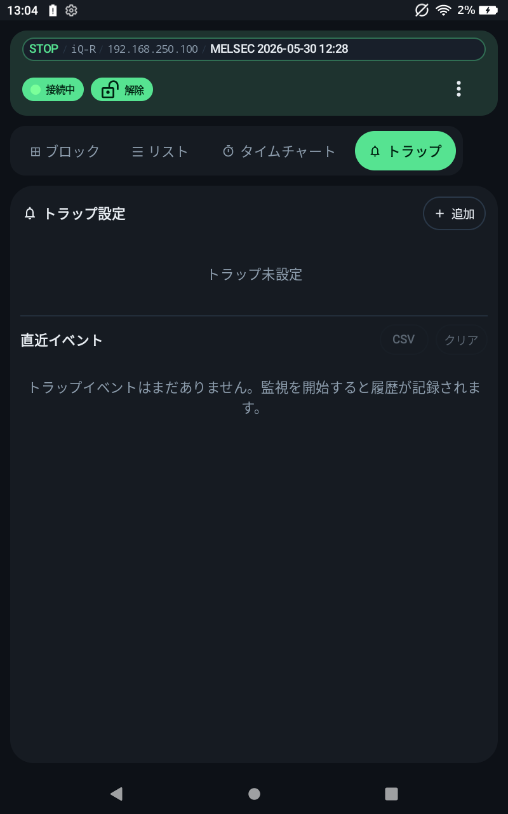

Monitor
監視
ブロック監視、リスト監視、デバイス範囲、フォーカスパネルの使い方です。



ブロック監視
CPU のデバイス範囲に沿って連続アドレスをページ単位で表示します。範囲行を開くと、デバイス種別、開始番号、ページ、表示密度を変更できます。
- 種類を変更すると先頭ページに戻ります。
- BIT デバイスは ON/OFF 表示になります。
- 数値デバイスはデータ型に応じて値を表示します。
MELSEC の監視
- 主な表示順は
X、Y、M、D、L、F、B、SB、SM、STC、TC、CC、W、SW、R、ZR、SDです。 B、W、SB、SWは 16 進表記です。iQ-FのX/Yは 8 進表記です。それ以外の MELSECX/Yは 16 進表記です。- 使用可能な範囲は CPU ファミリごとのデバイス範囲カタログで確認します。
KEYENCE の監視
Normal表示ではR、B、MR、LR、CR、DM、EM、FM、ZF、W、TM、CMを扱います。XYM表示ではB、CR、ZF、W、TM、CM、X、Y、M、L、D、E、Fを扱います。B、W、X、Yは 16 進表記です。その他は基本的に 10 進表記です。R0など実 I/O に割り当たるリレーは PLC スキャンで上書きされる場合があります。書込確認では非 I/O 領域を使ってください。
リスト監視
登録したアドレスだけを表示します。表示対象の追加・編集はリスト画面の List 登録編集 から行います。
デバイス範囲
メニューの デバイス範囲 で、選択中の CPU ファミリで使用できるデバイス範囲を確認できます。
network / station
10 進表記です。
module_io / multidrop
16 進表記です。
network/station/module_io/multidrop は MELSEC のルート指定で使用します。KEYENCE では使用しません。